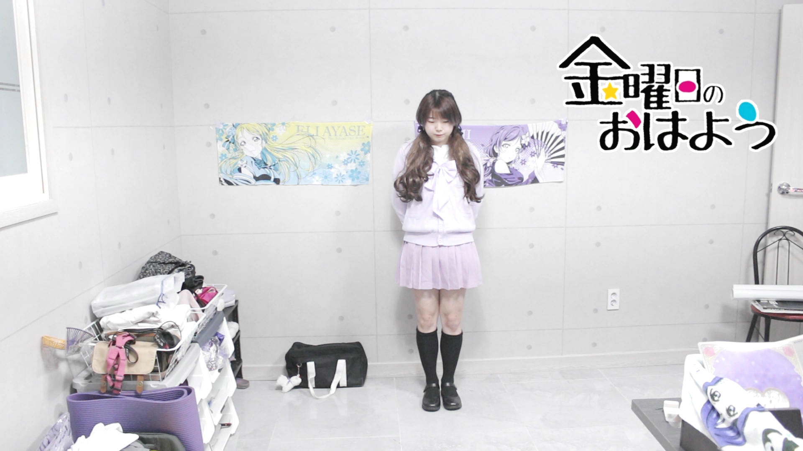

Youtube
#CloneCoding
#Practice
#Wisteria
CloneCoding - 유튜브 클론코딩 유튜브 강의 보면서 하기 숨이가빠 메이데이 닷- 닷- 닷닷닷 맘이아파 메이데이 닷- 닷- 닷닷닷 시간은 또 틱 톡 흘러만 가 틱 톡 들리니 내 싸인 싸인 닷- 닷- 닷닷닷
22,222 views 2 days ago
2,222
0
Share
Save
Report
빡보라
22,222 subscribers
subscribe
Up next
말하자면 웹페이지 디자인 툴 그런데 GUI가 없는
빡보라
22,222 views

디자인은 더 직관적이고 편한 툴이 있을거 같은데
빡보라
22,222 views
호환성이 안좋아서? 귀찮아서?
빡보라
22,222 views
 말하자면 웹페이지 디자인 툴 그런데 GUI가 없는 빡보라 22,222 views
말하자면 웹페이지 디자인 툴 그런데 GUI가 없는 빡보라 22,222 views